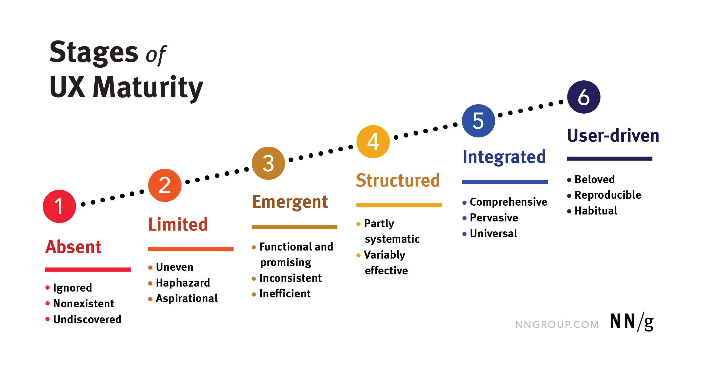

用户体验成熟度的6个级别
摘要：我们的用户体验成熟度模型有6个阶段，涵盖流程、设计、研究、领导支持和用户体验的全过程。使用我们的测验了解您组织的用户体验成熟度。
关键词：用户体验，设计管理
UX成熟度衡量组织成功交付以用户为中心设计的愿望和能力。它包括研究和设计流程、资源、工具和运营的质量和一致性，以及组织现在和未来通过其领导力、员工队伍和文化支持和加强用户体验的倾向。
背景
2006年，Jakob Nielsen开发了最早的用户体验成熟度模型之一，定义了用户体验成熟度的8个阶段。每个阶段都描述了用户体验在不同组织环境中的存在——从完全不进行用户研究的公司到实现高峰关注的公司。
从那时起，用户体验领域发生了很大变化：我们如何进行设计和研究，我们对工作、工作、流程、工具、可交付成果、领导力参与的了解，以及企业如何看待用户体验并将其优先考虑到整体战略中。考虑到这些变化，我们修改了UX成熟度的建模和衡量方式，以纳入新规范并描述我们在过去十五年中在成千上万的客户和学生身上目睹的组织演变。
用户体验成熟度模型
用户体验成熟度模型提供了一个框架来评估每个组织的用户体验相关优势和劣势。我们可以使用该评估来确定组织当前处于6个阶段中的哪个阶段。此外，该模型提供了有关组织如何提高其用户体验成熟度的见解。
用户体验成熟度的6个阶段是：
- 缺席：用户体验被忽略或不存在。
- 有限：用户体验工作很少见，随意完成，并且缺乏重要性。
- 紧急：用户体验工作是功能性的、有前途的，但做得不一致且效率低下。
- 结构化：该组织拥有广泛使用的半系统化用户体验相关方法，但其有效性和效率程度各不相同。
- 综合：用户体验工作是全面、有效和普遍的。
- 用户驱动：在各个层面对UX 奉献会带来深刻的洞察力和卓越的以用户为中心的设计成果。

用户体验成熟度的因素
提高用户体验成熟度需要跨越多个不同因素的增长和演变，包括：
- 策略：用户体验领导、规划和资源优先排序
- 文化：UX知识和培养UX职业和从业者的成长
- 过程：系统地使用用户体验研究和设计方法
- 结果：有意定义和衡量用户体验工作产生的结果
阶段1：缺席
在这个阶段的公司要么对UX视而不见，要么认为不需要它。以用户为中心的思维根本不是运作的一部分。
当用户体验不成熟时主要障碍是缺乏教育：
- 什么是用户体验
- 它对组织和客户的好处
- 可能的内部用户体验流程
- 如何开始做用户体验工作
阶段2：有限
处于有限阶段的组织以不规律的方式处理用户体验。进行小的用户体验工作，通常是出于以下三个原因之一：
- 法律必要性
- 具有UX意识的个人（可能是领导者）采取主动
- 一个尝试UX方法的实验团队
当用户体验成熟度有限时需要克服的障碍
这个阶段的挑战通常与过程有关：学习做UX工作的方法，组织一个多人团队，并开始建立例程和资源。
为了从这个阶段取得进展，组织应该通过展示与用户体验相关的小胜利、编制积极的案例研究以及培养与用户体验拥护者的关系，让用户体验获得关注，从而专注于让人们倾听 。
阶段3：紧急
当用户体验成熟度出现时，组织会在更多团队中展示用户体验工作，参与一些与用户体验相关的计划，并且可能会有用户体验预算。然而，用户体验工作规模小、不稳定，并且基于个人经理的计划而不是组织政策。一些使用多种研究和设计方法并进行多项研究的团队可能会开始看到他们努力的好处和结果。
当用户体验成熟时需要克服的障碍
很容易陷入“我们现在做用户体验”的想法中，并假设这个阶段已经足够好，但事实并非如此。为了从这个阶段取得进展，组织应该专注于在各个层面建立一种支持用户体验的文化，以聚集动力并在整个组织和项目之间向前推进。确保在进行权衡时适当考虑UX优先级。
阶段4：结构化
结构化用户体验意味着组织认识到用户体验的价值并建立了完整的用户体验团队或多个团队。领导力通常支持用户体验，有时会将其纳入高级策略。有一个集中的设计定义和一个共享的、迭代的以人为中心的设计过程。
用户研究贯穿于整个产品生命周期。政治和沟通不畅可能会导致资源分配不当，并在与用户体验相关的工作、产品领域或不需要的产品上过度支出。
当用户体验结构化时需要克服的障碍
尽管团队使用以用户体验为中心的流程并在这个阶段看到了好处，但仍然面临隐藏的弱点，这通常可以追溯到战略：不支持的领导者、随着团队规模扩大而与责任和所有权的紧张关系、成功指标（和奖金）与用户体验几乎没有关系，开发过程不包括发现研究或迭代设计，专注于迎合少数大客户，而不是坚持主动的用户体验策略。
阶段5：综合
当组织达到综合用户体验阶段时，他们的用户体验工作变得全面、普遍和普遍。组织内几乎所有团队通常都以高效、有效的方式执行与用户体验相关的活动。用户体验方法和流程经常有创新，甚至对整个用户体验领域的贡献。组织的重要成功指标——领导者最关心的——关注用户体验，甚至由用户体验相关的工作驱动。
整合用户体验成熟度时需要克服的障碍
尽管以用户为中心的设计受到尊重、理解和支持，但以用户为中心以外的因素才是真正推动业务发展的因素。专注于在组织的最高级别建立以用户为中心的结果指标。
阶段6：用户驱动
用户体验是常态——在整个组织中都是习惯性的、可复制的和喜爱的。很少有公司在这个阶段运营。
在这个阶段，每个人都对以用户为中心的设计有了充分的认识。通过研究了解用户需求是组织战略和项目优先级排序的主要驱动力。开发包括以用户为中心的迭代设计。领导者、团队和个人以用户为中心，并在日常工作中关注用户体验——从最高级别的战略到最小的设计元素或研究。他们计划变革和创新。
在用户驱动成熟阶段需要克服的障碍
虽然这个阶段是最终的用户体验成熟度目标，但在问题出现（资源膨胀、冲突目标或政治）和成熟度倒退之前，它很难实现，也很难长期维持。专注于保持用户体验工作的动力，倡导用户体验价值观，并教育新的团队成员，以防止组织倒退。